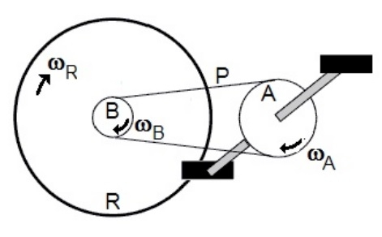

Projeto Único
Trabalho realizado em grupo por todos os alunos cursando engenharia no segundo semestre.
Matéria: Física do Movimento
Cronograma
Período: Segundo Semestre
Data:
agenda
Duração: 6 semanas
Papel do Aluno
Aplicar conhecimetos básicos de física do movimento
Construção de um protótipo com diversas articulações
Construção de um projeto que envolva movimento
Instrumentos e Técnicas
Fusion
FabLab